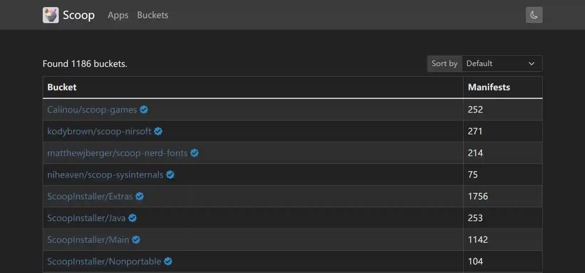
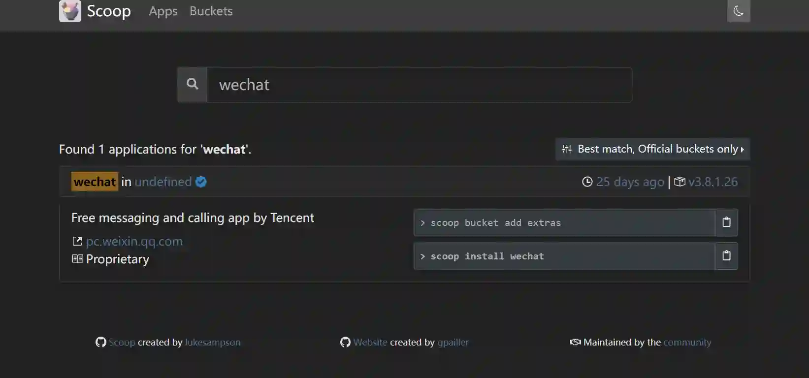

|2023-01-15|
零
某系统可以用命令行安装程序，这太蟀了！窗户操作系统呢？
壹
Scoop 是 Windows 的包管理器。和 Homebrew、apt-get 之类的同理。
官方网站：https://scoop.sh/
GitHub：https://github.com/ScoopInstaller
需要 PowerShell 在 5.1 版本及以上，安装方式官网及 readme 上有详细说明，在此不再赘述。
贰
Scoop 已经有了相当的软件包量，很多 buckets 可供使用。
没想到还有一个 scoop-games，果然摸鱼是强大的生产力。
国内的软件也有，完全跳过了在各类垃圾网站中搜索的过程。把 Official buckets only 复选框勾掉，就可以看到其他人制作的包。
只需要在终端里复制上一行 scoop bucket add main
然后 scoop install neofetch
就可以用上 Windows 版本的 Neofetch 了。

需要注意的是，Scoop 没有对中文路径的支持，Windows 用户名或自定义的安装路径如果有中文会出问题。
叁
Winget 是微软开发的类似工具，同时也有一个 网站 来提供 app。 但是怎么说，我并不能在 Winget 上看到微软的什么诚意。Scoop 反而让我留了下来，一些小软件（Neofetch之类的）我还是喜欢到 Scoop 上找，良好的社区氛围可太重要了。